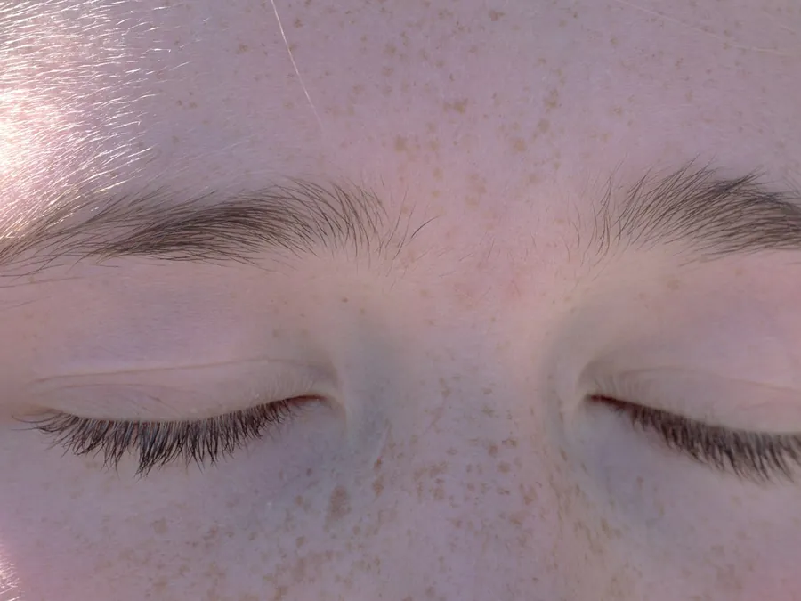
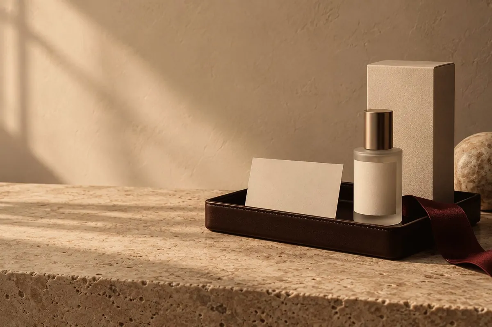

Flying in for eyelid surgery
Eyelid Surgery in Medellin,
Colombia, on a Short Trip
Of every surgery on this list, this one comes closest to an actual short trip. It's still surgery on your face, and that part isn't short.
You've heard "you look tired" for months even when you're sleeping fine, and every selfie or work video call shows the same droopy eyelid or under-eye bag that concealer and extra sleep don't fix. Of every surgery covered on this blog, eyelid surgery comes closest to an actual short trip: one to two hours in the operating room, and the shortest downtime on this list. That doesn't make it an errand you run over a long weekend. It's still surgery, on your face, and before you look at flights to Medellín, it's worth separating what "short trip" really means from what depends on how you plan it.
Everything about the procedure itself (what it is, who it is for, recovery and risks) is on our Eyelid Surgery in Medellín page.
What eyelid surgery does, and how long it takes in Medellin
Eyelid surgery, known medically as blepharoplasty, works on the upper lids, the lower lids, or both: it removes or repositions the extra skin and fat that gives a heavy or tired look, even after a full night's sleep. At noon, it runs 1 to 2 hours under local anesthesia with sedation or general anesthesia, always inside Q2's licensed surgical suites, never in a consultation office. (Q2 is a dedicated surgical facility, separate from the office where you first meet your surgeon.) The incisions follow the eyelid's natural folds, so the scar is usually barely visible once it's healed.
The shortest downtime on this list, not the simplest trip
The first days bring swelling and mild bruising, managed with cold compresses and sleeping with your head elevated. Stitches come out in the first week. Between weeks 2 and 3, you're back to your routine and to makeup. The final result, once the scar fully heals, takes 2 to 3 months, the fastest of any surgery we cover here.
Our stay reference for face surgery is still 1 to 2 weeks, built so your first in-person follow-up fits before you fly home, even though your actual downtime is only 7 to 10 days. That extra week isn't padding: it's the room your surgeon needs to confirm in person that you're healing well before you get on a plane. ASPS, the American Society of Plastic Surgeons, generally points to 7 to 10 days before flying after facial surgery, and flags that clot risk from sitting still, like on a long flight, stays higher for 6 weeks after any surgery. Those are general reference points, not a rule for your case: your surgeon sets your actual return date at your follow-up, not a number you read online.
Who this is for, and what it doesn't fix
The most common reasons patients come in for eyelid surgery are excess skin on the upper lid, bags or hollowing under the eyes, and a tired look that doesn't go away with rest. It can be paired with a brow lift or a facelift when you want more than just the eyelids addressed; your surgeon decides that, and whether it makes sense in your case, at an in-person consultation. The same rule applies here as for any surgery: you need an adult companion with you for the first few days, while swelling is at its worst and eye care needs attention throughout the day. If you're weighing facial surgery in general, how to choose a plastic surgeon in Medellin (also in Spanish) is worth reading before you book a flight: for facial work, the surgeon's judgment carries as much weight as the technique.
What still shows up in photos, even on a short trip
A short trip isn't the same as an invisible recovery. The bruising and swelling of the first days tend to show up exactly where you can't hide them: around your eyes, in every video call, and in every photo from that week in Medellín with family. If your plan includes visiting relatives or posting pictures from the trip, count those first 7 to 10 days as a visible part of the surgery, not a gap nobody will notice.
That's not a reason to skip it. It's honesty about the order of things: surgery and downtime first, the outings and the photos you actually want to share come after.
What we won't promise you
No surgery is risk-free, and eyelid surgery is no exception, even on the shorter end of recovery. We won't promise the trip shrinks to the bare minimum downtime, or that swelling fades on your schedule. What we can tell you is how the decision gets made carefully: an in-person consultation with Dr. Fernando Ruiz, pre-op testing before anyone operates, and follow-up by WhatsApp or video call once you're back in the US, which supports but never replaces the in-person checks you need before flying. For more on verifying a clinic is doing this the right way, is it safe to get plastic surgery in Colombia (also in Spanish) covers that in more detail, and how long to stay in Colombia after plastic surgery (also in Spanish) breaks down how that number is built by procedure.
Before you look at flights this week, message us on WhatsApp and tell us what tires you most about your look, and how much real time you have, for the trip and for the days after. That's how we start building a plan that actually fits.
Procedures in this guide
This guide is for information only and does not replace a medical consultation. Your specialist decides, in person, whether a procedure is right for you, your recovery time and when you can fly home. Every procedure carries risks and results vary from person to person.
Frequently asked questions
Frequently asked questions
How long does eyelid surgery take, and what anesthesia is used?
At noon, it runs 1 to 2 hours under local anesthesia with sedation or general anesthesia, always inside Q2's licensed surgical suites, never in a consultation office.
How many days off work do I need?
Approximate downtime is 7 to 10 days: swelling and mild bruising the first days, stitches out in the first week, and back to routine between weeks 2 and 3.
Will the scar be visible?
The incisions follow the eyelid's natural folds, so the scar is usually barely visible once it's healed.
Can it be combined with another procedure?
Yes, it's often paired with a brow lift or a facelift. That gets decided at the consultation, based on what you want to change.
When can I fly back to the US?
Your surgeon sets that date at your follow-up visit. As a general reference, ASPS suggests waiting 7 to 10 days after facial surgery before flying, but it's not a fixed rule for your case.
Guides
Keep reading.

A Thanksgiving plastic surgery trip to Medellín: what actually fitsYou've got Thursday and Friday off, the weekend tacks itself on, and you're wondering if that's enough time for a procedure in Medellín. The honest answer depends on your real number of days, not on how badly you want it to work.Read
Follow-up care after surgery in Colombia, once you're back homeThe surgery happened in Medellin. The follow-up doesn't stay there.ReadBy city
Flying in from your city.
noon Clinic
Let's plan your trip
Message us from the US and we'll set your consultation, procedure and follow-up dates with you.
We reply on WhatsApp within minutes during business hours. We answer your questions and book your in-person consultation; we never diagnose over WhatsApp. Why noon